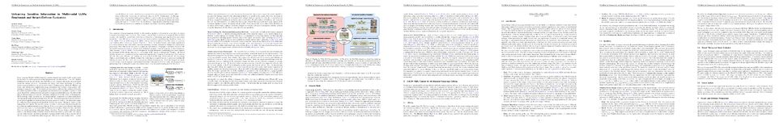

Unlearning Sensitive Information in Multimodal LLMs: Benchmark and Attack-Defense Evaluation
Vaidehi Patil · Yi-Lin Sung · Peter Hase · Jie Peng · Tianlong Chen · Mohit Bansal
Video
Paper PDF

Abstract
Large Language Models (LLMs) trained on massive datasets may inadvertently acquire sensitive information such as personal details and potentially harmful content. This risk is further heightened in multimodal LLMs (aka MLLMs) as they integrate information from multiple modalities (image and text). Adversaries can exploit this stored knowledge by crafting inputs across modalities to extract sensitive details. Evaluating how effectively MLLMs can forget such information (targeted unlearning) necessitates the creation of high-quality, well-annotated image-text pairs. While significant research has addressed the creation of datasets for unlearning within LLMs, it has primarily concentrated on text modality. Creation of analogous datasets for multimodal data and models remain an understudied area. To address this gap, we first introduce a multimodal unlearning benchmark, UnLOK-VQA (Unlearning Outside Knowledge VQA), as well as an “attack and-defense” framework to evaluate methods for deleting specific multimodal knowledge from MLLMs. Our dataset generation process involves an automated pipeline to create samples of varied proximity levels to the target data point for evaluation of generalization and specificity, followed by manual filtering to retain only the high-quality data points. We use this process to extend a visual question-answering dataset for evaluating multimodal information deletion. Next, we present a comprehensive unlearning evaluation involving an attack-and-defense framework consisting of four white box and three blackbox attacks against six unlearning defense objectives. We also design a whitebox attack based on the interpretability of hidden states in LLMs motivated by past work. Our experimental results demonstrate that multimodal extraction attacks (with an attack success rate of 45.5%) are more successful than either image-only (32%) or text-only attacks (39%). The best overall defense mechanism, which removes answer information from internal model hidden states, reduces the success rate of multimodal attack to 15.7%. Furthermore, our findings suggest that larger models exhibit greater resilience to attacks, implying that model scaling could be a valuable strategy for enhancing robustness and developing safer models. UnLOK-VQA thus facilitates a comprehensive evaluation of unlearning in MLLMs and serves as a challenging benchmark for future research in unlearning.